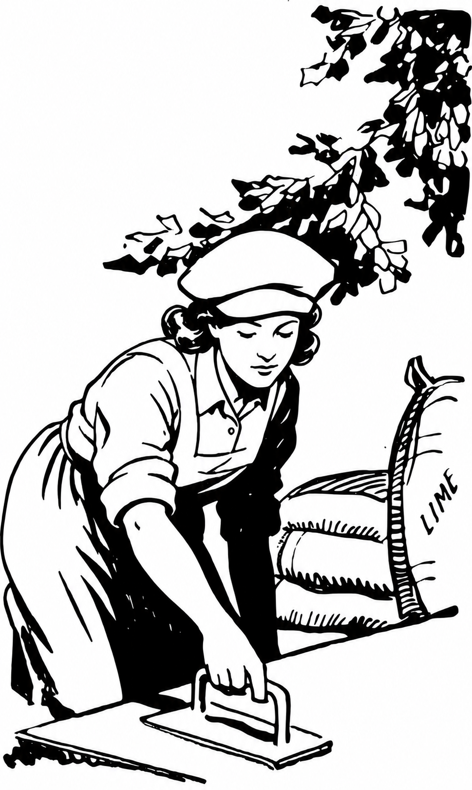

On Craft
What, Like It's Hard? (It Is. That's the Point.)
Confidence isn't competence, and competence isn't luck. On the women building real trade skills in public, and why "it looks easy" is the highest compliment the trade can offer.
Read the post